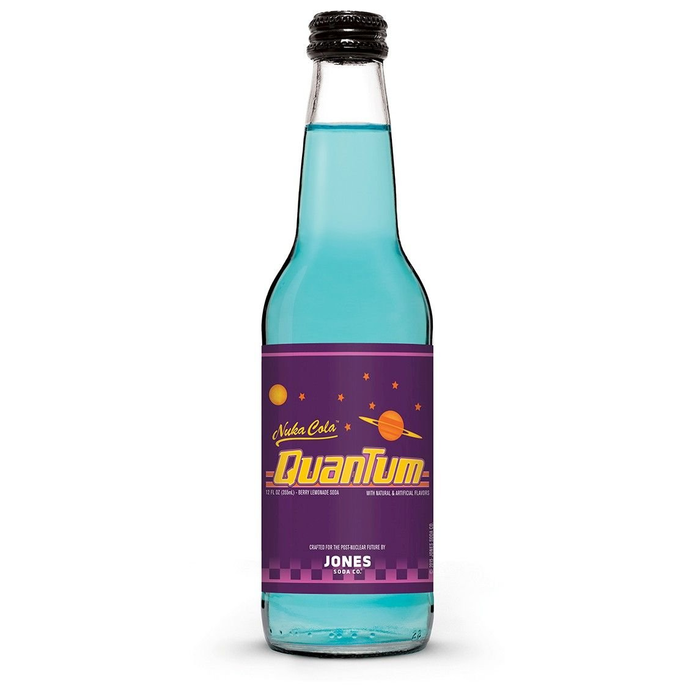

Fallout's Nuka-Cola Quantum
Made famous by the hit Bethesda Game Studios & Interplay franchise "Fallout".

Description
On your last leg (literally), Vault Dweller? Then suck down the tastey blue elixer of a Nuka-Cola Quantum!
Made famous by the hit video game franchise "Fallout" from Bethesda Game Studios & Interplay, this sweet bottle of liquid will put you in tip top shape to combat anything that dwells in the Wasteland!.
WARNING: We are not responsible for any mutations, bodily harm, illnesses, psychotic breakdowns or the like from the consumption of Nuka-Cola Quantum. Discretion lies solely with the consumer.
Ingredients
- 1 part Cream Soda
- 1 part Coca-Cola (or Pepsi if you unfortunately prefer a lesser drinking experience)
- 1 part Mountain Dew (We can't in good faith recommend Mello Yello as a substitute. No one deserves that)
Recipe
- Take a shaker glass and pour in the first part of Cream Soda.
- Add a cup of ice to chill the initial liquid.
- The add the next part Coca-Cola (or Pepsi...I guess).
- Lastly, add the final part of Mountain Dew (Don't you dare reach for that Mello Yello!)
- Shake well and serve in an appropriate sized drinking glass.
- Enjoy!